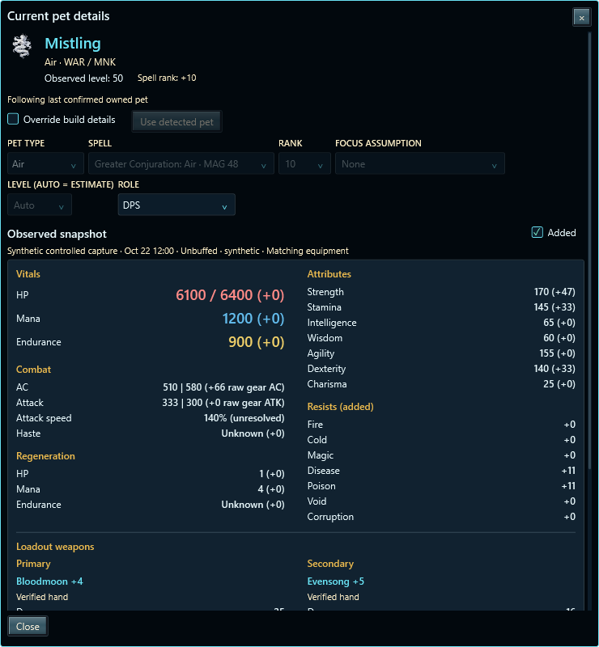
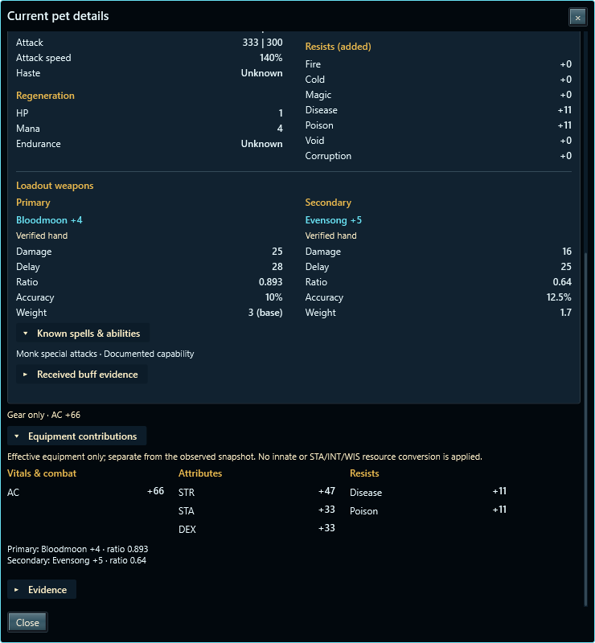
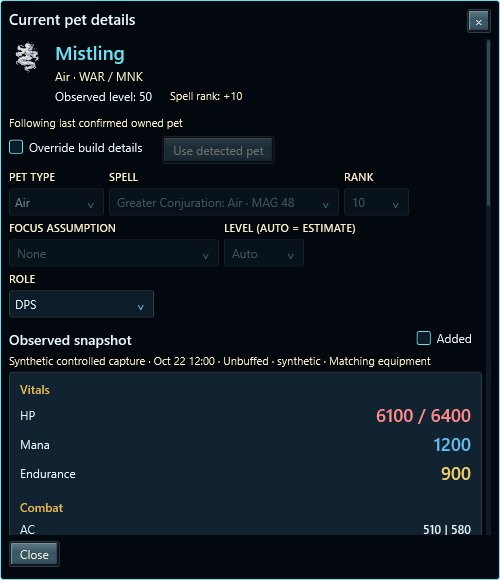
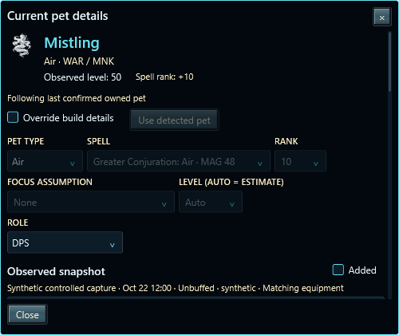
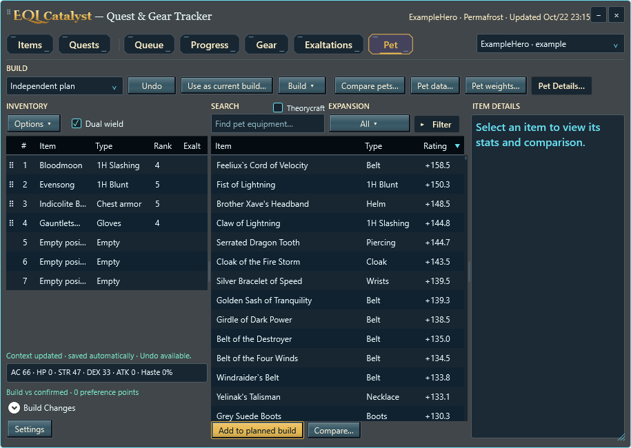
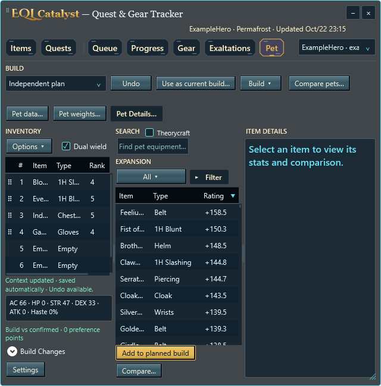
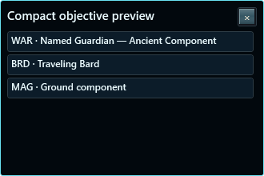

Added shows direct effective gear and active configured effects beside observed values. Received buffs stay in evidence. Resists always show signed gear subtotals; innate resists remain unknown. HP, Mana and Endurance use red, blue and yellow.
Maximum-capacity additions stay separate from equipped snapshots. Raw AC/Attack and unresolved speed conversions are labeled. The toggle starts unchecked each time the popup opens.

Damage, delay, ratio, accuracy and weight come from the effective ranked equipment. Hand confidence, inactive slots and base weight remain explicit. Known abilities distinguish documented capabilities, owned-pet records and cast attempts.

Sections stack with one outer scrollbar and a fixed Close action.


Character, zone and inventory update information moves right, onto a second line when narrow. Double-click noninteractive Tracker or Combat Lab header space to collapse or restore.


Class, drop actor and item are concise. Full instructions, quantities and alternate sources remain in tooltips.

Existing Ability Details and Game evidence now connect spell identity, validated client parameters and historical landing/fade evidence. Focus reference ranges use the caster’s effective loadout and documented restrictions. Cast attempts do not prove active buffs; current gear does not establish historical gear.
Spell, buff and focus help · Pet Details help · Focused validation
41 popup checks plus 11 header/objective/build-gate checks pass in both configurations. Focused core, research and evidence regressions pass. All captures use synthetic data. Broad theme/DPI matrices remain deferred; published Beta 1.4 and installers are unchanged.